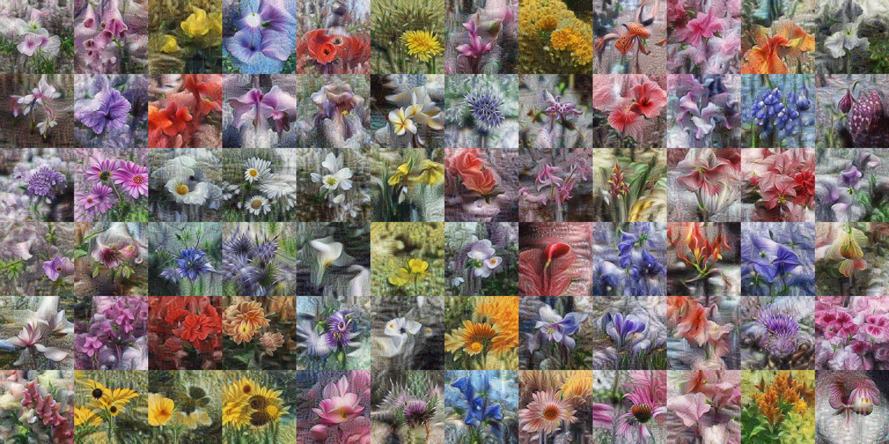

Massachusetts Institute of Technology
PhD in AI and Decision Making · Cambridge, Massachusetts
Machine Learning · Vision & Graphics · PhD Candidate
I am a PhD student at MIT CSAIL, where I study machine learning for vision and graphics. I am extremely fortunate to be co-advised by Vincent Sitzmann and Antonio Torralba.
Before MIT, I was part of the Master of Science in Robotics program at Carnegie Mellon, supported by an NSF fellowship. There I had the great pleasure of being advised by Simon Lucey (now director of the Australian Institute for Machine Learning) and Jun-Yan Zhu, and collaborating with Alexei Efros at UC Berkeley and Antonio Torralba at MIT.
Prior to CMU, I did my undergraduate studies at Louisiana Tech, completing degree programs in Computer Science, Mathematics, and Cyber Engineering. I am forever grateful to the professors who set me on this path, especially Mike O’Neal, Jonathan Walters, and Jean Gourd.




CVPR Workshop / 2022

IEEE T-PAMI / 2022


J. Electronic Imaging / 2017
PhD in AI and Decision Making · Cambridge, Massachusetts
B.S. Computer Science · B.S. Mathematics · B.S. Cyber Engineering · Ruston, Louisiana

Awarded by the NSF for graduate study in robotics.

Research Assistant, Carnegie Mellon · advised by Jun-Yan Zhu

Research Intern, Stennis Space Center · with Robert Ryan